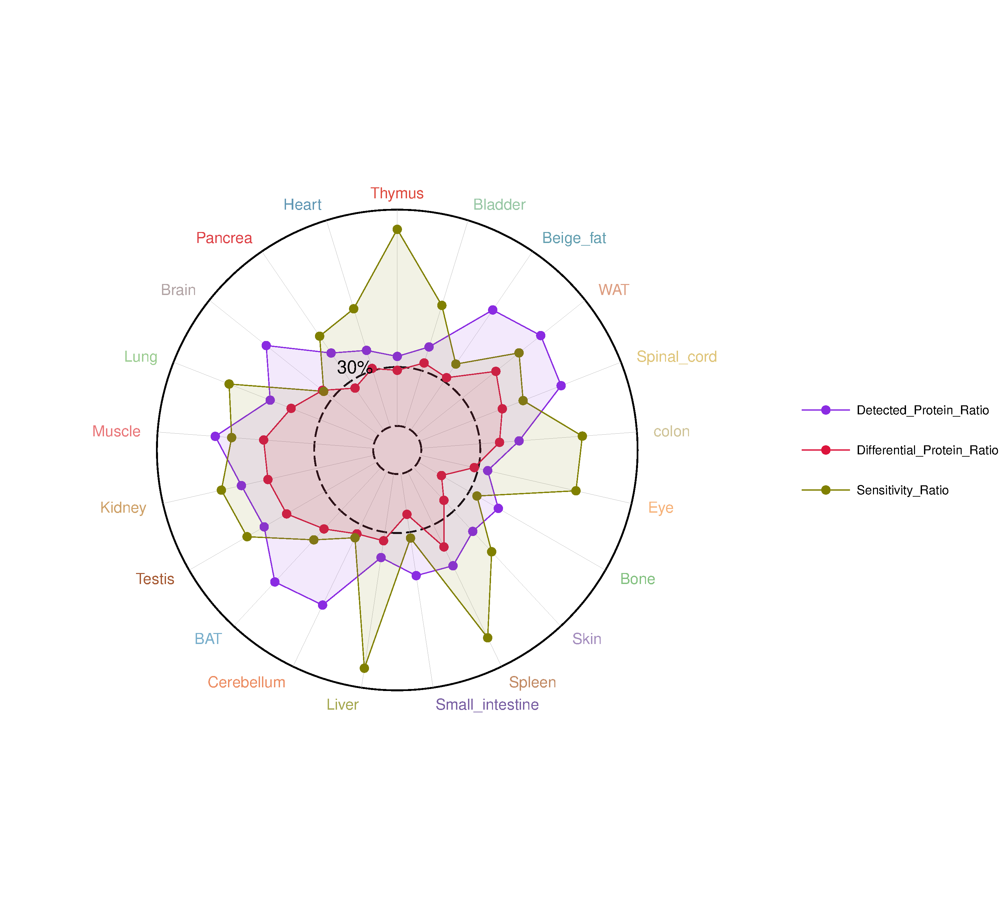

plot24 · 代码 4 · 图 2 · 笔记 1 · 代码库专题
雷达图
代码库整理的专题，README 见原始目录。

复现二 组织蛋白比例雷达图250806_diff_radar/03_复现二_组织蛋白比例雷达图.pdf
共 2 张：点缩略图切换主图，下载按钮跟随当前主图。

图源：03_复现二_组织蛋白比例雷达图.pdf
分析代码
4 个源码文件，按目录顺序；本机绝对路径已替换为 ~。 代码可复制，但需要按自己的数据改路径与参数。
250806_diff_radar/00_原版_250806_diff_radar.rmd
---
title: "顶刊复现 | 差异雷达图"
output: html_document
---
# 复现一
# 加载必要的包
```{r}
library(tidyverse) # 包含 dplyr、ggplot2 等数据处理与可视化核心包
library(ggradar) # 用于绘制雷达图的扩展包，基于 ggplot2
library(readxl) # 用于读取 Excel 文件（.xlsx）
```
# 读入数据
```{r}
data<-read_excel("data1.xlsx")
```
# 设置 Region 顺序（用于后续绘图 & LMM 模型）
```{r}
order <- c("dSub","CA1_so","CA1_py","CA1_sr","CA1_slm","vSub",
"DG_mo","DG_gc","DG_hil","CA3_so","CA3_py","CA3_sr")
```
# Linear Mixed Model: 密度 ~ Region * CellType * Sex + (1 | Animal.ID)
```{r}
library(lme4)
library(emmeans)
model <- lmer(density ~ Region * CellType * Sex + (1 | Animal.ID), data = data)
anova(model, type = 3)
# 进行成对比较
emm_region <- emmeans(model, ~ CellType | Region)
contrast_results <- contrast(emm_region, method = "pairwise", adjust = "fdr")
summary(contrast_results)
```
# 数据预处理：转换为雷达图格式
```{r}
# 计算每个Region和CellType的平均密度
summary_data <- data %>%
group_by(Region, CellType) %>%
summarise(mean_density = mean(density, na.rm = TRUE), .groups = 'drop')
# 将数据转换为宽格式（ggradar需要的格式）
radar_data <- summary_data %>%
pivot_wider(names_from = Region, values_from = mean_density) %>%
# 按照order重新排列列
select(CellType, all_of(order))
# 设置最大值用于网格
max_value <- ceiling(max(radar_data[,-1], na.rm = TRUE))
# 查看转换后的数据
print(radar_data)
print(paste("最大值:", max_value))
```
# 绘制雷达图
```{r}
p1 <- ggradar(radar_data,
axis.labels = c("dSub", "so", "py", "sr", "slm", "vSub",
"mo", "gc", "hil", "so", "py", "sr"),
values.radar = c("", max_value/2, max_value),
grid.min = 0,
grid.max = max_value,
grid.mid = max_value/2,
grid.line.width = 1,
gridline.min.colour = "white",
gridline.mid.colour = "grey",
gridline.max.colour = "grey",
grid.label.size = 5,
gridline.label.offset = 0.5,
label.gridline.min = FALSE,
label.gridline.mid = TRUE,
label.gridline.max = TRUE,
axis.label.offset = 1.1,
axis.label.size = 4,
group.line.width = 0.8,
group.point.size = 2,
group.colours = c("#D95F02", "#1B9E77"),
background.circle.colour = "grey",
legend.position = "top",
legend.text.size = 9
)
```
# 外圈分组注释
```{r}
# 创建空数据框用于极坐标注释
empty_data <- data.frame(x = 1:12, y = rep(0, 12))
p2 <- ggplot(empty_data, aes(x = x, y = y)) +
theme_minimal() +
theme(panel.grid = element_blank(), # 隐藏网格线
axis.title = element_blank(), # 隐藏轴标题
axis.text = element_blank() # 隐藏轴标签
) +
annotate("segment",
x = c(1.9, 6.9, 9.9),
xend = c(5.1, 9.1, 12.1),
y = 0, yend = 0) +
annotate("text", x = c(3.5, 8, 11), y = 0.8, label = c("CA1", "DG", "CA3"), size = 4.5) +
annotate("text", x = 1, y = 0.2, label = expression(paste("Density (cells·mm"^"-2", ")")), size = 4.5) +
coord_polar(start = -0.3)
```
# 合并雷达图 + 外圈注释
```{r}
library(patchwork)
p2 + inset_element(p1, left = 0, bottom = 0.14, right = 0.97, top = 1.03) # 0-1，相对坐标
```
# 复现二
# 加载R包，准备数据
```{r}
library(tidyverse) # 包含 dplyr、ggplot2 等数据处理与可视化核心包
library(readxl) # 用于读取 Excel 文件（.xlsx）
library(ggradar) # 用于绘制雷达图的扩展包，基于 ggplot2
```
# 读入数据
```{r}
data <- read_excel("data2.xlsx")
```
# 数据预处理：转换为雷达图格式
```{r}
# 将数据转换为ggradar需要的格式
radar_data <- data %>%
# 为每个指标创建一行，组织名作为列
pivot_longer(cols = -Tissue, names_to = "Metric", values_to = "Value") %>%
# 转换为宽格式，组织作为列
pivot_wider(names_from = Tissue, values_from = Value) %>%
# 第一列必须是分组变量
select(Metric, everything())
# 设置颜色
mycol <- c("#8A2BE2", "#DC143C", "#808000") # 紫色、红色、橄榄色
# 查看转换后的数据
print(radar_data)
```
# 绘制雷达图
```{r}
p <- ggradar(radar_data,
grid.min = 0,
grid.mid = 0.3,
grid.max = 1.1,
gridline.min.colour = "black",
gridline.mid.colour = "black",
gridline.max.colour = "black",
gridline.min.linetype = "longdash",
gridline.mid.linetype = "longdash",
gridline.max.linetype = "solid",
base.size = 1,
axis.label.size = 4,
grid.label.size = 5.5,
axis.label.offset = 1.07,
values.radar = c("", "30%", ""),
group.colours = mycol,
group.point.size = 3,
group.line.width = 0.3,
background.circle.transparency = 0,
legend.position = 'right',
legend.text.size = 9,
fill = TRUE,
fill.alpha = 0.1)
p
```
# 设置变量名称颜色
```{r}
variable_colors <- c(
Thymus = "#de4b3f", Bladder = "#98c7a5", Beige_fat = "#639fb0", WAT = "#dd9e82",
Spinal_cord = "#dfc57a", colon = "#cfc397", Eye = "#f6b279", Bone = "#83c180",
Skin = "#a38cbd", Spleen = "#c28b65", Small_intestine = "#795fa3", Liver = "#a6a952",
Cerebellum = "#ec8d63", BAT = "#78aecb", Testis = "#a65a34", Kidney = "#cea168",
Muscle = "#e97679", Lung = "#9acc90", Brain = "#b2a4a5", Pancrea = "#de4247",
Heart = "#6197b4"
)
# ggradar 包没有修改轴标签字体颜色的参数，这里通过找到轴标签图层的位置，来修改其字体的颜色。
```
250806_diff_radar/01_create_sample_data.r
# ============================================================
# 01_create_sample_data.R — 生成本教程两份模拟数据（data1.xlsx / data2.xlsx）
# 来源: 原版 create_sample_data.R（RStudio 缓存恢复），路径改为相对目录
# 说明: data 已随仓库提供 CSV/XLSX，一般无需重跑；
# 重跑会覆盖 xlsx（注意 set.seed 固定，结果可复现）
# 运行: Rscript 01_create_sample_data.R
# ============================================================
dir_data <- "."
# 创建示例数据
library(tidyverse)
library(writexl)
set.seed(123)
# ==================== 复现一：脑科学数据 ====================
# 创建D1 vs D2细胞在不同脑区的密度数据
regions <- c("dSub","CA1_so","CA1_py","CA1_sr","CA1_slm","vSub",
"DG_mo","DG_gc","DG_hil","CA3_so","CA3_py","CA3_sr")
# 生成基础数据
n_animals <- 8
data1 <- expand.grid(
Animal.ID = paste0("Animal_", 1:n_animals),
Region = regions,
CellType = c("D1", "D2"),
Sex = c("Male", "Female")
)
# 添加密度数据，模拟真实的生物学差异
data1 <- data1 %>%
mutate(
# 基础密度（不同脑区有不同的基础表达水平）
base_density = case_when(
Region %in% c("CA1_py", "DG_gc", "vSub") ~ runif(n(), 15, 25), # 这些区域密度较高
Region %in% c("CA1_so", "CA3_so", "DG_mo") ~ runif(n(), 8, 15),
TRUE ~ runif(n(), 5, 12)
),
# D1和D2的差异效应
cell_effect = case_when(
CellType == "D1" & Region %in% c("CA1_py", "vSub", "DG_gc") ~ runif(n(), 3, 8), # D1在这些区域显著更高
CellType == "D2" & Region %in% c("CA1_py", "vSub", "DG_gc") ~ runif(n(), -2, 1),
CellType == "D1" ~ runif(n(), -1, 2),
TRUE ~ runif(n(), -1, 2)
),
# 性别效应
sex_effect = ifelse(Sex == "Male", runif(n(), -1, 1), runif(n(), -0.5, 1.5)),
# 个体随机效应
individual_effect = rnorm(n(), 0, 2),
# 最终密度
density = pmax(0, base_density + cell_effect + sex_effect + individual_effect)
) %>%
select(Animal.ID, Region, CellType, Sex, density)
# 保存数据1
write_xlsx(data1, file.path(dir_data, "data1.xlsx"))
# ==================== 复现二：蛋白质组数据 ====================
# 创建跨组织蛋白质组年龄相关变化数据
tissues <- c("Thymus", "Bladder", "Beige_fat", "WAT", "Spinal_cord", "colon",
"Eye", "Bone", "Skin", "Spleen", "Small_intestine", "Liver",
"Cerebellum", "BAT", "Testis", "Kidney", "Muscle", "Lung",
"Brain", "Pancrea", "Heart")
# 生成蛋白质组数据
set.seed(456)
data2 <- data.frame(
Tissue = tissues,
# 检测到的蛋白比例 (紫色线)
Detected_Protein_Ratio = runif(length(tissues), 0.3, 0.9),
# 差异表达的蛋白比例 (红色线)
Differential_Protein_Ratio = runif(length(tissues), 0.1, 0.6),
# 差异蛋白在被检测蛋白中的比例 (橄榄色线，敏感度指标)
Sensitivity_Ratio = runif(length(tissues), 0.2, 0.8)
) %>%
# 确保逻辑关系：差异蛋白比例不能超过检测到的蛋白比例
mutate(
Differential_Protein_Ratio = pmin(Differential_Protein_Ratio, Detected_Protein_Ratio * 0.8),
# 敏感度 = 差异蛋白数 / 检测到的蛋白数
Sensitivity_Ratio = Differential_Protein_Ratio / Detected_Protein_Ratio * runif(length(tissues), 0.8, 1.2)
) %>%
# 添加一些特殊的生物学特征（某些组织更敏感）
mutate(
Sensitivity_Ratio = case_when(
Tissue %in% c("Thymus", "Spleen", "Liver") ~ pmin(Sensitivity_Ratio * 1.3, 1.0), # 免疫相关组织更敏感
Tissue %in% c("Brain", "Heart") ~ Sensitivity_Ratio * 0.7, # 重要器官相对稳定
TRUE ~ Sensitivity_Ratio
)
)
# 保存数据2
write_xlsx(data2, file.path(dir_data, "data2.xlsx"))
write.csv(data1, file.path(dir_data, "data1.csv"), row.names = FALSE)
write.csv(data2, file.path(dir_data, "data2.csv"), row.names = FALSE)
cat("示例数据已创建完成！\n")
cat("data1.xlsx: D1 vs D2细胞密度数据，", nrow(data1), "行数据\n")
cat("data2.xlsx: 跨组织蛋白质组数据，", nrow(data2), "行数据\n")
250806_diff_radar/02_复现一_脑区差异雷达图.r
#!/usr/bin/env Rscript
# ============================================================
# 02_复现一_脑区差异雷达图.R
# 顶刊复现 | 差异雷达图：D1/D2 中脑多巴胺神经元在 12 个脑区的密度
# 1) 线性混合模型 LMM: density ~ Region*CellType*Sex + (1|Animal.ID)
# → anova(type=3) + emmeans 成对比较(FDR)
# 2) ggradar 雷达图（12 脑区为轴，D1/D2 两组线）
# 3) patchwork 叠加外圈 CA1/DG/CA3 分组弧线注释
# 数据: data1.csv (Animal.ID, Region, CellType, Sex, density)
# 输出: 02_复现一_脑区差异雷达图.pdf （矢量，PDF-only 规则）
# 依赖: tidyverse ggradar patchwork lme4 emmeans
# install.packages(c("tidyverse","patchwork","lme4","emmeans"))
# # ggradar 已从 CRAN 下架，从 GitHub 装:
# # remotes::install_github("ricardo-bion/ggradar")
# 运行: Rscript 02_复现一_脑区差异雷达图.R
# ============================================================
suppressPackageStartupMessages({
library(tidyverse) # 数据处理 + ggplot2
library(ggradar) # 雷达图
library(patchwork) # 拼图（外圈注释 inset）
library(lme4) # 线性混合模型
library(emmeans) # 模型后成对比较
})
run_lmm <- TRUE # FALSE 则跳过统计检验，只画图
# ---- 读入数据 ----
data <- read_csv("data1.csv", show_col_types = FALSE)
# 脑区顺序：雷达图轴顺序 = 模型对比顺序（按解剖层级排）
order <- c("dSub", "CA1_so", "CA1_py", "CA1_sr", "CA1_slm", "vSub",
"DG_mo", "DG_gc", "DG_hil", "CA3_so", "CA3_py", "CA3_sr")
data$Region <- factor(data$Region, levels = order)
# ---- 1. 线性混合模型（"差异"雷达图的统计支撑）----
if (run_lmm) {
model <- lmer(density ~ Region * CellType * Sex + (1 | Animal.ID), data = data)
# ⚠ lme4::anova 不接受 type=3，会 warning "additional arguments ignored"
# 并给出 sequential (Type I) 检验——原教程即如此（复现保持原样）。
# 要严格 Type III 用 car::Anova(model, type = 3)（需另装 car 包）。
print(anova(model, type = 3))
# 每个 Region 内 D1 vs D2 成对比较，FDR 校正
emm_region <- emmeans(model, ~ CellType | Region)
contrast_results <- contrast(emm_region, method = "pairwise", adjust = "fdr")
print(summary(contrast_results))
}
# ---- 2. 数据预处理：长表 → ggradar 宽表 ----
# ggradar 要求：第一列为分组名，其余列全为数值（每个数值列 = 一个轴）
summary_data <- data %>%
group_by(Region, CellType) %>%
summarise(mean_density = mean(density, na.rm = TRUE), .groups = "drop")
radar_data <- summary_data %>%
pivot_wider(names_from = Region, values_from = mean_density) %>%
select(CellType, all_of(order)) # 按 order 固定轴顺序
max_value <- ceiling(max(radar_data[, -1], na.rm = TRUE)) # 网格上限取整
print(radar_data)
# ---- 3. 绘制雷达图 ----
p1 <- ggradar(radar_data,
axis.labels = c("dSub", "so", "py", "sr", "slm", "vSub",
"mo", "gc", "hil", "so", "py", "sr"), # 同名层位缩写(so/py/sr 重复出现)
values.radar = c("", max_value / 2, max_value), # 网格刻度文本（首尾位置留空）
grid.min = 0,
grid.max = max_value,
grid.mid = max_value / 2,
# 网格样式：最内圈白、中/外圈灰
grid.line.width = 1,
gridline.min.colour = "white",
gridline.mid.colour = "grey",
gridline.max.colour = "grey",
grid.label.size = 5,
gridline.label.offset = 0.5,
label.gridline.min = FALSE,
label.gridline.mid = TRUE,
label.gridline.max = TRUE,
# 轴标签
axis.label.offset = 1.1,
axis.label.size = 4,
# 分组（两组线）
group.line.width = 0.8,
group.point.size = 2,
group.colours = c("#D95F02", "#1B9E77"), # ColorBrewer Dark2 前两色
# 背景与图例
background.circle.colour = "grey",
legend.position = "top",
legend.text.size = 9
)
# ---- 4. 外圈分组注释（CA1 / DG / CA3 弧线 + 脑区单位）----
# ⚠ 原教程版本此处有 bug（见 README 坑#1）：annotate 的 y=0 在极坐标里半径=0
# （缩成圆心一个点），且 y 轴范围退化为 0..0，弧线整段画不出来；Rmd 渲染图
# 里外圈注释就是缺失的。修复 = 显式 scale_y_continuous(0..1.13) +
# 弧线放 y=1.0（半径 88% 画布）、文字放 1.06/1.11（弧外）。
empty_data <- data.frame(x = 1:12, y = rep(0, 12))
p2 <- ggplot(empty_data, aes(x = x, y = y)) +
theme_minimal() +
theme(
panel.grid = element_blank(),
axis.title = element_blank(),
axis.text = element_blank(),
panel.background = element_blank(),
plot.background = element_blank() # 透明底：让 p1 叠加时层次干净
) +
scale_x_continuous(limits = c(0.5, 12.5), expand = c(0, 0)) +
scale_y_continuous(limits = c(0, 1.13), expand = c(0, 0)) +
annotate("segment", # 三段弧 = 轴区间 2-5(CA1) 7-9(DG) 10-12(CA3)
x = c(1.9, 6.9, 9.9),
xend = c(5.1, 9.1, 12.1),
y = 1.0, yend = 1.0, linewidth = 1.1
) +
annotate("text", x = c(3.5, 8, 11), y = 1.06,
label = c("CA1", "DG", "CA3"), size = 6) +
annotate("text", x = 1, y = 1.11,
label = expression(paste("Density (cells·mm"^"-2", ")")), size = 6) +
coord_polar(start = 0) # start=0：x=1 正顶与 ggradar 的 dSub 轴对齐
#（原版 -0.3 会让 CA3 文字压到 py 轴标签）
# ---- 5. 合并输出（inset 相对坐标 0-1）----
# p1 必须透明背景，否则白底会盖住 p2 的弧线；p1 中心略偏上(0.14~1.03)与成品一致
p1 <- p1 + theme(plot.background = element_blank(), panel.background = element_blank())
final <- p2 + inset_element(p1, left = 0.03, bottom = 0.14, right = 0.94, top = 1.03)
ggsave("02_复现一_脑区差异雷达图.pdf", final,
width = 9, height = 9, units = "in", device = "pdf")
cat("✅ 已输出: 02_复现一_脑区差异雷达图.pdf\n")
250806_diff_radar/03_复现二_组织蛋白比例雷达图.r
#!/usr/bin/env Rscript
# ============================================================
# 03_复现二_组织蛋白比例雷达图.R
# 顶刊复现 | 差异雷达图（复现二）：21 个组织 × 3 项蛋白质组比例指标
# 1) 宽表 → ggradar：3 条组线（Detected/Differential/Sensitivity），
# 21 个组织为轴（多轴多组雷达图）
# 2) 原文留白的"轴标签按组织改色"在此实现（ggradar 无该参数，
# 需事后改轴标签 GeomText 层的 aes_params）
# 数据: data2.csv (Tissue, Detected_Protein_Ratio,
# Differential_Protein_Ratio, Sensitivity_Ratio)
# 输出: 03_复现二_组织蛋白比例雷达图.pdf （矢量，PDF-only 规则）
# 依赖: tidyverse ggradar
# 运行: Rscript 03_复现二_组织蛋白比例雷达图.R
# ============================================================
suppressPackageStartupMessages({
library(tidyverse)
library(ggradar)
})
# ---- 读入数据 ----
data <- read_csv("data2.csv", show_col_types = FALSE)
# ---- 1. 长表 → ggradar 宽表 ----
# 行 = 分组(指标)，列 = 轴(组织)；ggradar 要求第一列为分组变量
radar_data <- data %>%
pivot_longer(cols = -Tissue, names_to = "Metric", values_to = "Value") %>%
pivot_wider(names_from = Tissue, values_from = Value) %>%
select(Metric, everything())
mycol <- c("#8A2BE2", "#DC143C", "#808000") # 紫/红/橄榄：三条指标线
print(radar_data)
# ---- 2. 绘制雷达图 ----
p <- ggradar(radar_data,
# 网格：0 / 0.3 / 1.1，内两圈虚线、外圈实线
grid.min = 0,
grid.mid = 0.3,
grid.max = 1.1,
gridline.min.colour = "black",
gridline.mid.colour = "black",
gridline.max.colour = "black",
gridline.min.linetype = "longdash",
gridline.mid.linetype = "longdash",
gridline.max.linetype = "solid",
# 字体与尺寸
base.size = 1,
axis.label.size = 4,
grid.label.size = 5.5,
axis.label.offset = 1.07,
values.radar = c("", "30%", ""), # 只显示中圈刻度文本
# 分组线与填充
group.colours = mycol,
group.point.size = 3,
group.line.width = 0.3,
background.circle.transparency = 0, # 背景不透明
legend.position = "right",
legend.text.size = 9,
fill = TRUE,
fill.alpha = 0.1
)
# ---- 3. 轴标签按组织改色（原教程留白部分，实现见 README 坑#2）----
# ggradar 没有 axis.label.colours 参数，且其源码把 21 个轴标签拆进 3 个
# geom_text 层（按 x 位置分左/中/右），层内 label 各不相同 → 不能整层改色。
# 可行做法：给轴标签层加 colour=text 映射（data 自带 text 列=组织名），
# 再用扩展的 scale_colour_manual 同时供给"3 条组线 + 21 个标签"的颜色，
# breaks 限定 legend 只出现 3 个指标。
variable_colors <- c(
Thymus = "#de4b3f", Bladder = "#98c7a5", Beige_fat = "#639fb0", WAT = "#dd9e82",
Spinal_cord = "#dfc57a", colon = "#cfc397", Eye = "#f6b279", Bone = "#83c180",
Skin = "#a38cbd", Spleen = "#c28b65", Small_intestine = "#795fa3", Liver = "#a6a952",
Cerebellum = "#ec8d63", BAT = "#78aecb", Testis = "#a65a34", Kidney = "#cea168",
Muscle = "#e97679", Lung = "#9acc90", Brain = "#b2a4a5", Pancrea = "#de4247",
Heart = "#6197b4"
)
set_axis_label_colors <- function(p, label_colors, group_names, group_colors) {
# label_colors: 组织名 → 颜色（命名向量）
# group_names: 组线名（= Metric 取值，3 个）
# group_colors: 组线颜色（与 group_names 等长）
n_hit <- 0
for (i in seq_along(p$layers)) {
l <- p$layers[[i]]
if (!inherits(l$geom, "GeomText")) next # 只动文本层
if (!is.data.frame(l$data) || !"text" %in% names(l$data)) next # 轴标签层 data 含 text 列
# 精确区分：轴标签层 mapping 是 label=text（列映射），
# 网格刻度层 mapping 是 label=values.radar[i]（常量表达式，虽 data 也有 text 列）
if (!identical(rlang::as_label(l$mapping$label), "text")) next
# 加 colour 映射：颜色按该层 data$text（组织名）解析
l$mapping <- ggplot2::aes(x = x, y = y, label = text, colour = text)
p$layers[[i]] <- l
n_hit <- n_hit + 1
}
stopifnot(n_hit > 0)
message(sprintf("轴标签层命中 %d 个（3=全部）", n_hit))
# 扩展 manual scale：组线名 + 组织名一次给色；breaks 保住 3 条组线的 legend
full_values <- c(setNames(group_colors, group_names), label_colors)
p + scale_colour_manual(values = full_values, breaks = group_names)
}
metric_names <- radar_data$Metric # 3 个组线名（组线层 colour 映射用它取色）
p <- set_axis_label_colors(p, variable_colors, metric_names, mycol)
# ---- 4. 输出 PDF ----
ggsave("03_复现二_组织蛋白比例雷达图.pdf", p,
width = 10, height = 9, units = "in", device = "pdf")
cat("✅ 已输出: 03_复现二_组织蛋白比例雷达图.pdf\n")
用 MCP 直接出图
这个专题已经做成确定性工具，调用后直接返回图片， 不需要 AI 现写代码。